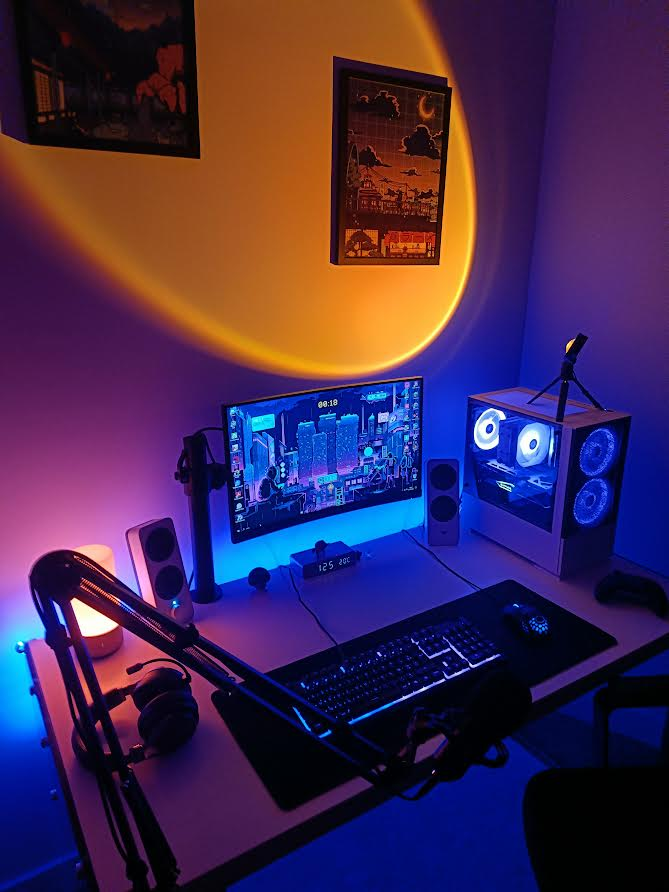
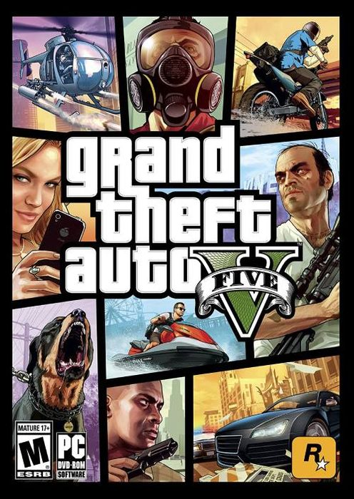
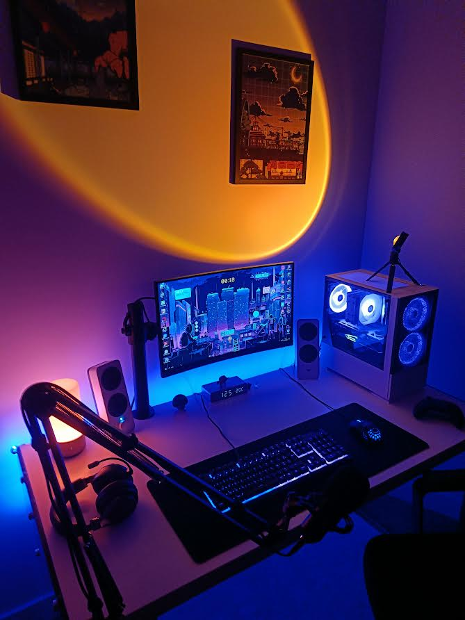
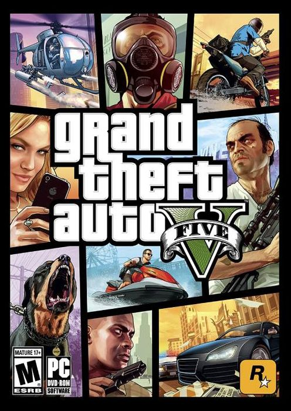

Hobbies
One of my passions is cars and more precisely : beautiful cars. I enjoy photographing them on the street as soon as I see one. I even created a folder on my phone where I put all the photos I collect. When I get my license and I have enough money, I’d like to buy a nice car and drive the weekend through the streets with the engine roaring. Below you can see some of the cars I took pictures of :
The passion that takes me the most time is video games and hardware. I built my own PC Gaming by buying all the components separately. I’m very happy with it! I play with friends almost every night at games like Rocket League (football with cars), or GTA V. Also, if you want to play with me next time, my discord is fryfi_94#4949.
 



Finally, another of my hobbies is sport, I have been playing tennis for almost 8 years and swimming for 5 years.